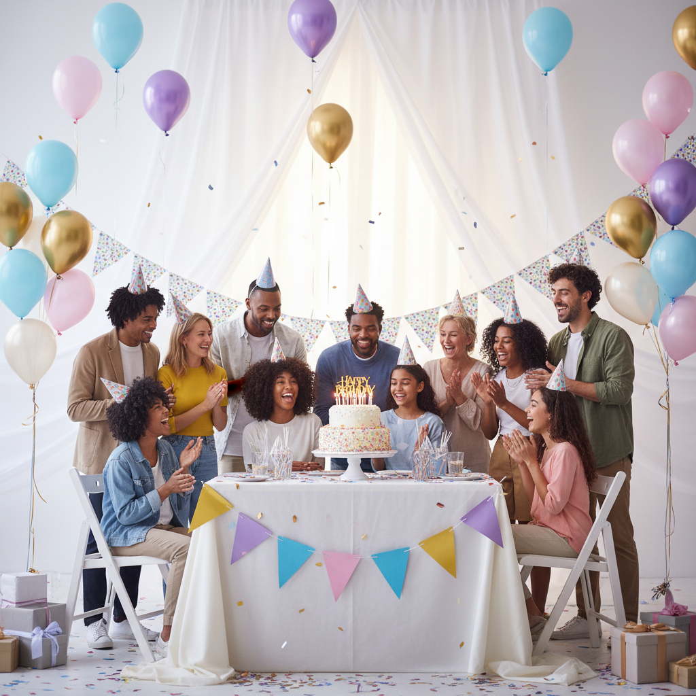
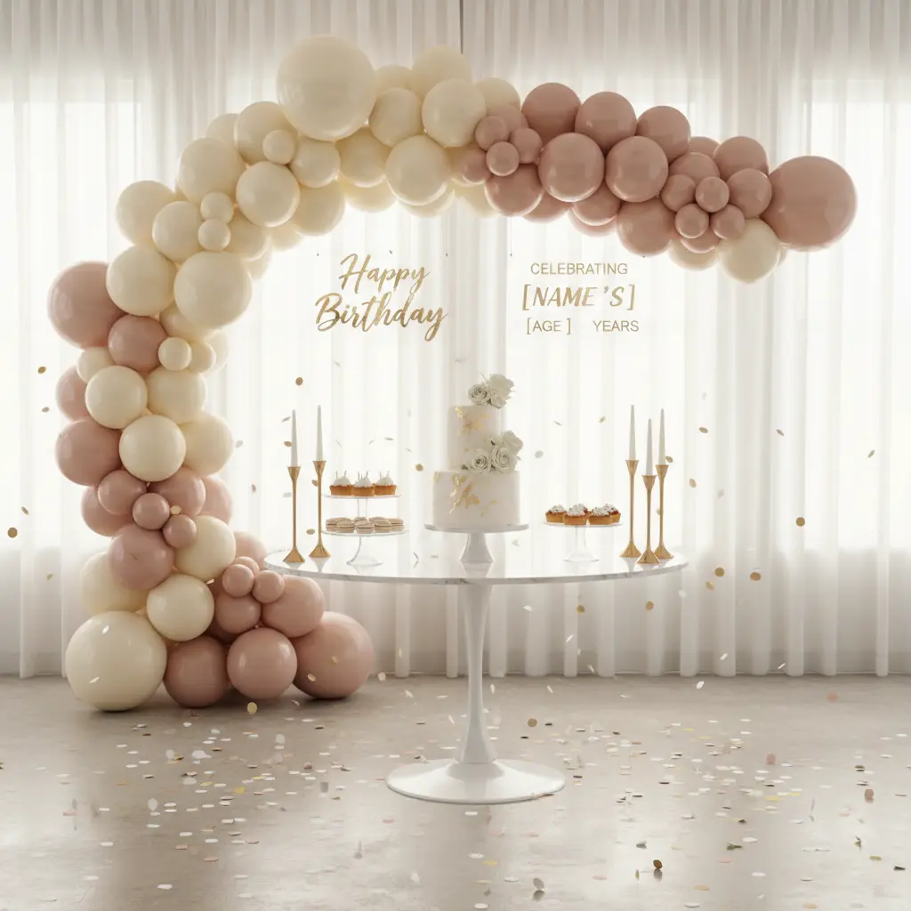
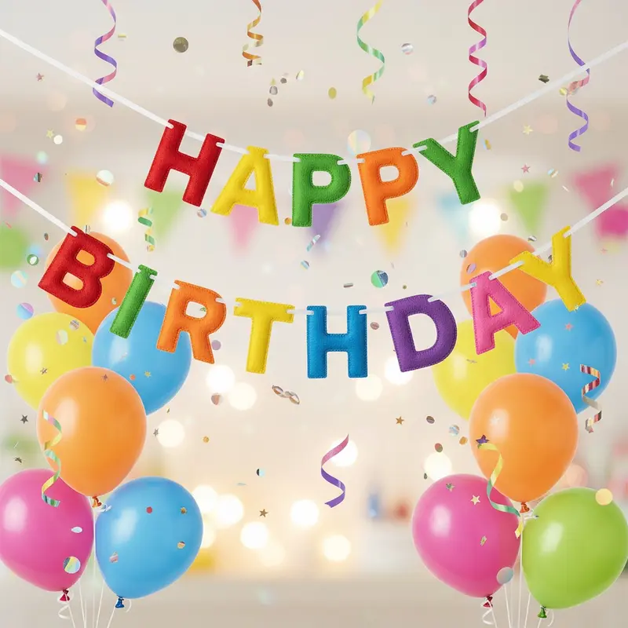

Every birthday deserves a celebration that reflects the personality and style of the honored guest. Whether you're planning an intimate gathering for a child, a sophisticated soiree for a milestone birthday, or a fun-filled party with friends, the right birthday decoration can transform an ordinary venue into a magical wonderland that creates lasting memories.
In this comprehensive guide, we'll explore the latest trends, timeless classics, and creative ideas for birthday party decorations that will make your celebration truly unforgettable. From elegant acrylic signs to colorful balloon arrangements, we'll cover everything you need to know to create the perfect atmosphere for your special day.
Understanding the Importance of Birthday Decorations
Birthday decorations do far more than simply beautify a space. They set the tone for the entire celebration, create photo-worthy moments, and make guests feel welcomed and excited to participate in the festivities. Research shows that thoughtfully designed party environments significantly enhance the overall guest experience and create stronger emotional connections to the celebration.
When guests walk into a beautifully decorated venue, they immediately understand the theme and mood of the party. Whether it's a whimsical children's party with bright colors and playful elements or an elegant adult celebration with sophisticated accents, the decorations communicate the host's attention to detail and care in planning the event.
Trending Birthday Decoration Ideas for 2026
This year, we're seeing exciting trends that blend nostalgia with modern aesthetics. Here are the top birthday decoration trends dominating celebrations:
1. Acrylic and Transparent Elements
Acrylic signs and decorations have become increasingly popular for birthday celebrations. These sleek, modern pieces add a touch of elegance while remaining versatile enough to fit any theme. From welcome signs featuring the birthday person's name to acrylic table numbers and drink menus, these transparent elements create a sophisticated ambiance that appeals to both modern and classic tastes.
The beauty of acrylic decorations lies in their ability to reflect and refract light, creating a sparkling effect that enhances the party atmosphere. They're also highly durable and can be repurposed after the event, making them an eco-friendly choice for conscious celebrations.
2. Sustainable and Reusable Decor
Environmental consciousness continues to influence party planning decisions. More hosts are choosing decorations that can be reused, recycled, or repurposed. This includes fabric bunting, wooden signs that become keepsakes, and biodegradable confetti and balloons. Sustainable decorations not only reduce environmental impact but often add a charming, handcrafted quality to the celebration.
3. Immersive Theme Experiences
Rather than simply adding decorative elements, hosts are creating fully immersive themed experiences. This means transforming the entire venue to transport guests to another world—whether it's a roaring 1920s speakeasy, a tropical paradise, a fairy-tale kingdom, or a favorite movie setting. Every detail from table settings to wall decorations contributes to the overall narrative.
4. Personalized Touches
Customization is key in 2026 birthday celebrations. Personalized items like acrylic name tags, custom welcome signs featuring the birthday person's name and age, and bespoke photo backdrops make the celebration uniquely special. These personalized elements create wonderful opportunities for photos and become treasured mementos.
Choosing the Right Theme for Your Birthday Party
Selecting a theme is one of the most exciting parts of planning a birthday celebration. Your theme will guide all your decoration choices and create a cohesive look throughout the event. Here are considerations for choosing the perfect theme:
- Age Appropriateness: Consider the birthday person's age and interests. Children's parties often feature beloved characters or colorful themes, while adult celebrations might lean toward sophisticated color schemes or hobby-related themes.
- Personal Preferences: The best birthday celebrations reflect the personality of the guest of honor. Consider their favorite colors, hobbies, travel experiences, or childhood memories when selecting a theme.
- Season and Venue: Some themes work better in certain seasons or venue types. An outdoor garden party suits different decorations than an indoor evening gala.
- Guest Demographics: Consider your guest list when choosing a theme. A complex adult theme might not resonate with guests who have children, while a childish theme might feel out of place at an adult milestone celebration.
Essential Birthday Decoration Elements
Regardless of your chosen theme, certain decoration elements are essential for creating a complete birthday celebration:
Welcome and Directional Signs
First impressions matter, and your entrance decorations set the stage for the entire event. A beautiful welcome sign greeting guests as they arrive establishes the theme and makes attendees feel special. For larger venues, directional signs help guests navigate between different areas of the celebration.

Table Centerpieces and Settings
Table decorations create the focal point of your celebration and provide opportunities for detailed theming. Consider using acrylic candle holders, themed centerpieces, and coordinated table linens to create visual interest. Table numbers and place cards help guests find their seats while adding to the overall aesthetic.
Backdrops and Photo Opportunities
Photo backdrops have become essential birthday decoration elements. They provide designated areas for guests to take photos and create lasting memories of the celebration. Modern options include balloon arches, flower walls, acrylic letter installations, and themed backdrop panels.
Ceiling and Wall Decorations
Don't neglect the overhead and vertical spaces when planning your decorations. Hanging installations, paper lanterns, streamers, and wall murals transform plain spaces into festive environments. These elements draw the eye upward and create a fully immersive atmosphere.
Milestone Birthday Decorations
Certain birthdays hold special significance and deserve extra celebration. Here's how to handle decorations for major milestones:
30th Birthday
The 30th birthday marks the transition into true adulthood and is often celebrated with sophistication. Think elegant color schemes like gold and black, champagne toasts, and decorations that celebrate achievements and future adventures.
40th Birthday
The 40th birthday, or the "over the hill" celebration, can be both celebratory and humorous. Popular themes include retro decades (celebrating the birthday person's decade of birth), "life begins at 40" motifs, and sophisticated evening party aesthetics.
50th Birthday and Beyond
Golden anniversary birthdays deserve grand celebrations. Gold and white color schemes, elegant crystal and mirror accents, and sophisticated floral arrangements create a luxurious atmosphere. These milestone celebrations often benefit from classic, timeless decoration styles.
Budget-Friendly Birthday Decoration Tips
Creating a stunning birthday celebration doesn't have to break the bank. Here are smart strategies for maximizing impact while minimizing costs:
- Focus on Focal Points: Invest in statement pieces that create maximum visual impact, like a dramatic entrance sign or impressive photo backdrop, rather than trying to decorate every surface.
- DIY Elements: Incorporate handcrafted items like paper pom-poms, homemade bunting, or personal photographs for a personal touch that saves money.
- Repurpose ceremony decorations: If the birthday follows a wedding or other event, many decorations can be repurposed with modifications.
- Rent instead of buy: For large items like furniture or elaborate structures, rental companies often offer better value than purchasing items you'll rarely use.
- Shop sales and use coupons: Stock up on basic party supplies during sales and use coupons for larger purchases.
Working with Professional Decorators
For those who want truly spectacular celebrations without the stress of planning and execution, professional party decorators offer invaluable services. Professional decorators bring expertise in design, access to high-quality materials and equipment, and the ability to execute complex themes that might be challenging for DIY efforts.
When selecting a decorator, look for professionals with experience in birthday celebrations specifically, review their portfolio of past work, and discuss your vision and budget openly. The best decorators will listen to your ideas and translate them into stunning reality while offering creative suggestions to enhance your celebration.

Conclusion: Creating Your Dream Birthday Celebration
Birthday decorations have the power to transform ordinary spaces into extraordinary celebrations that honor the special person being celebrated. Whether you prefer elegant acrylic signs, whimsical balloon arrangements, or fully immersive themed environments, the key is to create a cohesive celebration that reflects the personality and style of the birthday person.
Remember that the most memorable birthday celebrations aren't necessarily the most expensive—they're the ones that make guests feel welcomed, create genuine moments of joy, and celebrate the unique individual whose special day it is. With thoughtful planning, creative vision, and attention to detail, you can create a birthday celebration that will be remembered for years to come.
Ready to create your perfect birthday celebration? Contact us today for custom acrylic decorations, personalized signs, and expert advice on bringing your birthday vision to life.
Ready to Create Your Dream Birthday Celebration?
Let us help you design stunning custom decorations for your special day. From elegant acrylic signs to personalized party sets, we offer high-quality products that make birthdays unforgettable.
Get a Free Quote TodayEmail: info@eventdecorsigns.com | WhatsApp: +86 150 1234 5678